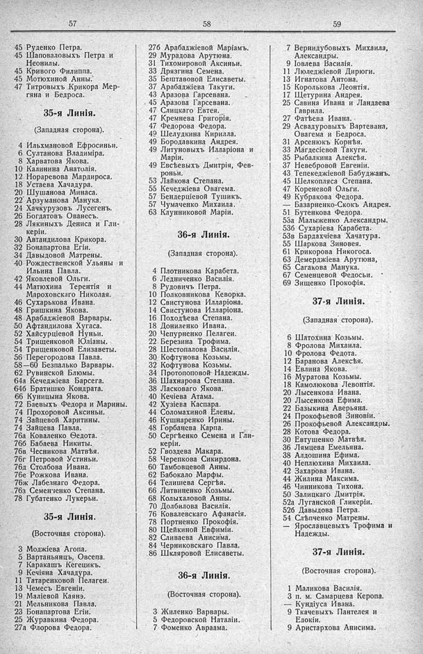

Лист источника 525
Скан

Распознанный текст
57
45 Руденко Петра.
45 Шаповаловыхъ Петра и
Неонилы.
45 Кривого Филиппа.
45 Мотюхиной Анны.
47 Титровыхъ Крикора Мер-
гяна и Бедроса.
35-я Линія.
(Западная сторона).
4 Ильхмановой Ефросиньи.
6 Султанова Владиміра.
8 Харватова Якова.
10 Калинина Анатолія.
12 Нораревова Мардироса.
18 Устаева Хачадура.
20 Шушанова Минаса.
22 Арзуманова Манука.
24 Хачкурузовъ Лусегенъ.
26 Богдатовъ Ованесъ.
28 Лякиныхъ Дениса и Гли-
керіи.
30 Автандилова Крикора.
32 Бонапартова Егіи.
34 Давыдовой Матрены.
40 Рождественской Ульяны и
Ильина Павла.
42 Яковлевой Ольги.
44 Матюхина Терентія и
Мароховскаго Николая.
46 Сухарькова Ивана.
48 Гришкина Якова.
48 Арабаджіевой Варвары.
50 Афтандилова Хугаса.
52 Хайсурціевой Нуньи.
54 Трищенковой Юліаны.
54 Трищенковой Елизаветы.
56 Перегородова Павла.
58—60 Безпалько Варвары.
62 Рувинской Блюмы.
64а Кечеджіева Барсега.
64б Братишко Кондрата.
66 Куницына Якова.
72 Баевыхъ Федора и Марины.
74 Прохоровой Аксиньи.
74 Зайцевой Харитины.
74 Зайцева Павла.
76а Коваленко Ѳедота.
76б Бабаева Никиты.
76в Чесникова Матвѣя.
76г Петровой Устиньи.
76д Столбова Ивана.
76е Рожкова Ивана.
76ж Лабезнаго Федора.
76з Семенченко Степана.
78 Губатенко Лукерьи.
35-я Линія.
(Восточная сторона).
3 Моджіева Агопа.
5 Вартаньянцъ, Овсепа.
7 Каракашъ Кегецикъ.
9 Кечіяна Хачадура.
11 Татаренковой Пелагеи.
13 Чемесъ Евгеніи.
19 Маліевой Каянэ.
21 Мельникова Павла.
23 Бонапартова Егіи.
25 Журавкина Федора.
27а Флорова Федора.
58
27б Арабаджіевой Маріамъ.
29 Мурадова Арутюна.
31 Тихомировой Аксиньи.
33 Дрязгина Семена.
35 Бештавовой Елисаветы.
37 Арабаджіева Такуги.
43 Аразова Гарсевана.
45 Аразова Гарсевана.
47 Слицкаго Евтея.
47 Кремнева Григорія.
47 Федорова Федора.
49 Шелудкина Кирилла.
49 Бородавкина Андрея.
49 Литуновыхъ Илларіона и
Маріи.
49 Евсѣевыхъ Дмитрія, Фев-
роньи.
53 Лайкова Степана.
55 Кечеджіева Овагема.
57 Бендерціевой Тушикъ.
57 Чумаченко Михаила.
63 Клунниковой Маріи.
36-я Линія.
(Западная сторона).
4 Плотникова Карабета.
6 Ледниченко Василія.
8 Рудовичъ Петра.
10 Полковникова Кеворка.
12 Свистунова Илларіона.
14 Свистунова Илларіона.
16 Походѣева Степана.
18 Дониленко Ивана.
20 Чепурненко Пелагеи.
22 Березина Трофима.
28 Шестопалова Василія.
30 Кофтунова Козьмы.
32 Кофтунова Козьмы.
34 Протопоповой Надежды.
36 Шахнарова Степана.
38 Ласковаго Якова.
40 Кечіева Атама.
42 Хузiева Каспара.
44 Соломахиной Елены.
46 Кушнаренко Ирины.
48 Горбанева Карпа.
50 Сергѣенко Семена и Гли-
керіи.
52 Гвоздева Макара.
58 Черепкова Сикирдона.
60 Тамбовцевой Анны.
62 Бабокало Марфы.
64 Телишева Сергѣя.
66 Литвиненко Козьмы.
68 Колыхаловой Анны.
70 Долбилова Василія.
76 Ковалевскаго Афанасія.
78 Портненко Прокофія.
80 Шейкиной Евфиміи.
82 Сливаева Анисима.
84 Черниковскаго Павла.
86 Шкляровой Елисаветы.
36-я Линія.
(Восточная сторона).
3 Жиленко Варвары.
5 Федоровской Наталіи.
7 Фоменко Авраама.
59
7 Вернидубовыхъ Михаила,
Александры.
9 Іовлева Василія.
11 Люледжіевой Дюрюги.
13 Игнатова Антона.
15 Королькова Леонтія.
17 Щетурина Андрея.
25 Савина Ивана и Ландаева
Гаврила.
27 Фатѣева Ивана.
29 Асвадуровыхъ Вартевана,
Овагема и Бедроса.
31 Арсенюкъ Корнѣя.
33 Магдесіевой Такуги.
35 Рыбалкина Алексѣя.
37 Невебровой Евгеніи.
43 Тепекеджіевой Бабуджанъ.
45 Шелкопляса Степана.
47 Кореневой Ольги.
49 Кубракова Федора.
— Базарненко-Скокъ Андрея.
51 Бутенкова Федора.
53а Малыженко Александры.
53б Сухаріева Карабета.
53в Бардахчіева Хачатура.
55 Шаркова Зиновея.
61 Крикорова Никогоса.
63 Демерджіева Арутюна,
65 Сагакова Манука.
67 Семенцевой Федосьи.
69 Зищенко Прокофія.
37-я Линія.
(Западная сторона).
6 Шатохина Козьмы.
8 Фролова Михаила.
10 Фролова Федота.
12 Баранова Алексѣя.
14 Евлина Якова.
16 Муратова Козьмы.
18 Камолюкова Левонтія.
20 Лысенкова Ивана.
20 Лысенкова Ефима.
22 Базыкина Аверьяна.
24 Прокофьевой Зиновіи.
26 Прокофьевой Александры.
28 Котова Федора.
30 Евтушенко Матвѣя.
36 Лямцева Емельяна.
38 Алдошина Ефима.
40 Неплюхина Михаила.
42 Захарова Ивана.
44 Жилина Максима.
46 Чинникова Тихона.
50 Залицкаго Дмитрія.
52а Луганской Гликеріи.
52б Давыдова Петра.
54 Слѣпченко Матрены.
— Ярославцевыхъ Трофима и
Надежды.
37-я Линія.
(Восточная сторона).
1 Маликова Василія.
3 п. м. Самарцева Керопа.
— Кундіуса Ивана.
9 Ткачевыхъ Пантелея и
Едокіи.
9 Аристархова Анисима.